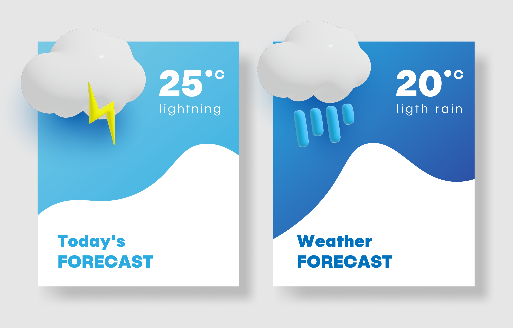

Activity 3: Weather
Audio: Weather

Listen to the audio Weather.
Answer the following questions.
What is the topic of this audio?
What type of language is in the report in this audio?
What type of language is used in the expression from the audio, ‘Yeah, a bit nippy this morning’?
Write down the temperatures you hear in the audio in the table below.
| Place | Temperature |
|---|---|
| West: Top temperature | 21 |
| West: Current temperature | 15 |
| Coast: Top temperature | 20 |
| Coast: Current temperature | 15 |
What will the weather be on Friday?
Answers
What is the topic of this audio?
| Choices | Answer |
|---|---|
| Taxation services | |
| Saving money | |
| Weather | ✓ |
| News talk |
What type of language is in the report in this audio?
| Choices | Answer |
|---|---|
| Informal language using casual expressions, shortened words and short phrases | |
| Semi-formal language using some specialised vocabulary, some missing words | ✓ |
| Formal language using technical vocabulary, adjectives to describe nouns and long sentences joined by connecting words |
What type of language is used in the expression from the audio, ‘Yeah, a bit nippy this morning’?
| Choices | Answer |
|---|---|
| Informal language using casual expressions, missing words and a short phrase | ✓ |
| Semi-formal language using everyday and some specialised vocabulary | |
| Formal language using technical vocabulary, adjectives to describe nouns and long sentences joined by connecting words |
Write the temperatures you hear in the audio.
| Place | Temperature |
|---|---|
| West: Top temperature | 21 |
| West: Current temperature | 15 |
| Coast: Top temperature | 20 |
| Coast: Current temperature | 15 |
What will the weather be on Friday?
| Choices | Answer |
|---|---|
| Partly cloudy | |
| Showers, storms and a southerly change | ✓ |
| Extremely hot and humid | |
| Fine weather. Light breeze picking up in the afternoon |
Show transcript – Weather
Louise Summers: 2BC weather, thanks to Chambers Taxation Services. Save money by getting the professionals at Chambers to help you.
A mild to warm day, cloudy with rain at times, but clearing during the day. Moderate to fresh gusty southerly winds. Heading for a top today of 20 along the coast and 21 in the west. Tomorrow, some showers clearing in the afternoon. Fine weather Thursday. On Friday showers, storms and a southerly change. Currently, humidity 72%, and winds southerly at 42. 15 degrees and 4 below average at the moment on the coast. Also, 15 in the west. I'm Louise Summers, now the news talk continues on 2BC with Mike Bradley.
Mike Bradley: Yeah, bit nippy this morning. Good morning and welcome to the program.